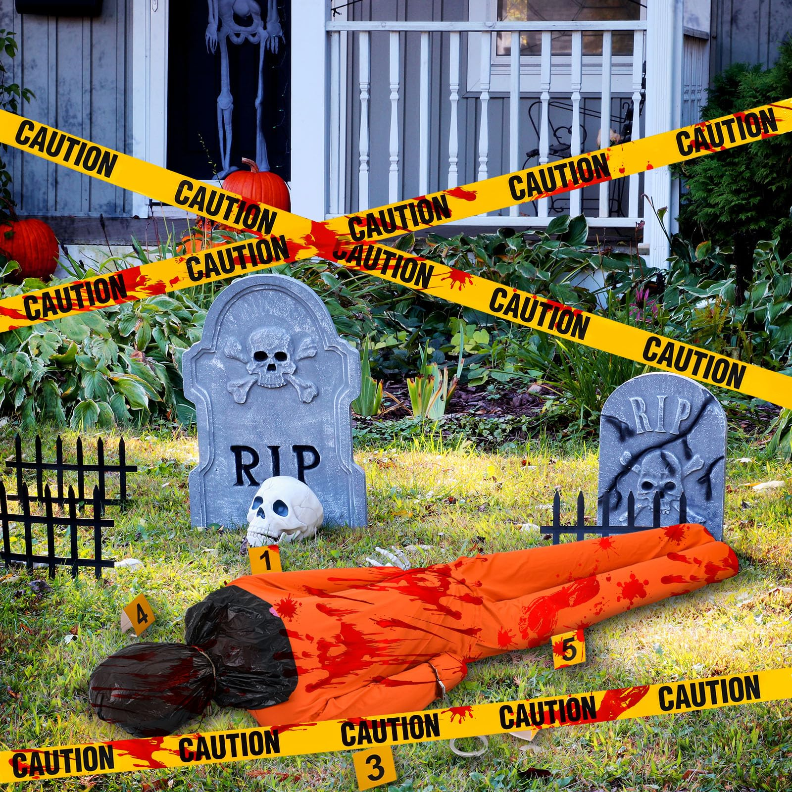
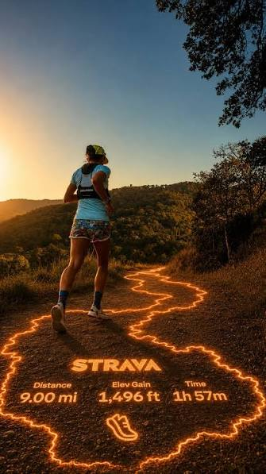

Astrid Philippet
Master of Management in Analytics · Desautels Faculty of Management, McGill University
I'm Astrid Philippet, a Management and Analytics (MMA) student at McGill University.
My background spans international relations, diplomacy, and corporate finance, and I'm now focused on where finance meets technology. I'm doing the MMA to build data-driven decision-making skills and turn that cross-disciplinary background into sharper analytical judgment.
Education
Master of Management in Analytics
- MMA Representative; Entrance Award of $12,000
Master of Science in International Business, Strategic Corporate Finance
- Thesis: Reshaping Financial Markets through Fintech Adoption: Evidence from Belgian Women's Investment Behavior
Bachelor of Arts in European Studies, minor in International Business
- Thesis: Shaping the Global Digital Order: Contrasting U.S., EU and Chinese Digital Regulatory Strategies in South Korea
Skills
- Financial analysis & strategic decision-making
- Valuation (DCF, CAPM), portfolio construction & optimization
- Statistical analysis (regression, mediation/moderation) & survey design
- Relational database design (3NF, ERD)
- Cross-cultural communication & negotiation
- Report writing & policy analysis
- Stakeholder & relationship management
Technical Skills
- Python
- R
- SQL
- SPSS
- Excel (financial modelling, pivot tables)
- Power BI
- Databricks
- Qualtrics
- PowerPoint & Word
Career Interests
- Fintech & digital banking
- Corporate finance & M&A
- Data analytics & business intelligence
- Real estate
- International trade & economic policy
- Venture capital & startup ecosystems
Languages
- French (native)
- English (fluent)
- Spanish (upper-intermediate)
- Dutch & German (elementary)
Extracurricular & Interests
Former Model United Nations delegate (HamMUN, MiniMUN, JCUMUN, EuroMUN) with three Best Delegate awards, and a member of the United Nations Student Association. Member of the McGill Triathlon Club. Interests include geopolitics, real estate, hiking, classical piano, guitar, singing, and puzzles.
Business Intelligence Developer & UI Designer, Michelin (Metro Tire Business Unit)
- Developing a proof of concept to improve demand forecasting accuracy and support inventory and procurement decisions
- Leading UI design and development of Power BI forecasting dashboards for Michelin's planning and procurement teams
Economic & Political Affairs Intern, Embassy of the Kingdom of Belgium
- Drafted political and economic analyses on Australia and New Zealand and maintained country files across 12 markets, consolidating political, economic, and trade intelligence for reporting to Brussels
- Represented the Embassy at 30+ diplomatic meetings and conferences, synthesizing key insights and briefing senior staff to support ministerial visit preparation
External Relations Manager, Scope Maastricht (Business & Economics Association)
- Targeted consulting firms, negotiated fees, and secured visits for the association's Luxembourg consulting trip
- Delivered a trip rated 8.4/10 by participants, above the previous trip's score of 8.1/10
Member of the Permanent Delegation, United Nations Student Association (UNSA)
- Trained weekly in UN debate simulations, practicing public speaking, negotiation, and resolution drafting
Delegate, Model United Nations Conferences
- Delegate at HamMUN, MiniMUN, EuroMUN, and JCUMUN
- Led 4 resolutions on topics such as wartime environmental damage and pandemic governance, and won 3 Best Delegate awards
Scope-AI-Thon 2026, University of Waterloo x McGill University
- Proposed an AI contactless monitoring system for early detection of deterioration in isolated patients, placing 2nd
Real Estate Price Estimation
Built regression models to estimate house prices from age, distance to the nearest metro station, nearby stores, and location, using 414 sales. Compared linear regression, decision trees, and random forests, then tuned the best model. Test error was higher than cross-validation error because the test set included prices outside the training range.

Halloween and Crime in Montréal
Group project on 363,000 police reports from 2015 to 2025. Built and compared four models to rank high-crime days and tested whether Halloween changes crime. The main finding is a shift toward mischief and robbery rather than higher total crime. The model beats a seasonal baseline only modestly on held-out years.

Strava Kudos Analysis
Statistical analysis of what earns kudos on 178 runs. Used OLS and Poisson count models with time-based controls, then a logistic model for breakout runs. A photo or video is associated with about 20% more kudos, and each extra kilometre with about 4% more.

Causal Inference: MRT Distance and House Prices
Estimated how much being within 500 m of a metro station raises house prices, using CausalML and DoWhy on 414 sales. The naive gap was about 17 per unit area. The causal estimate is about 9 to 12, and the effect looks larger for newer houses. Limitations include possible hidden confounders.